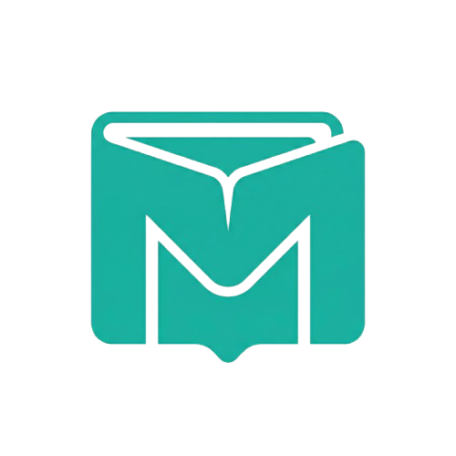
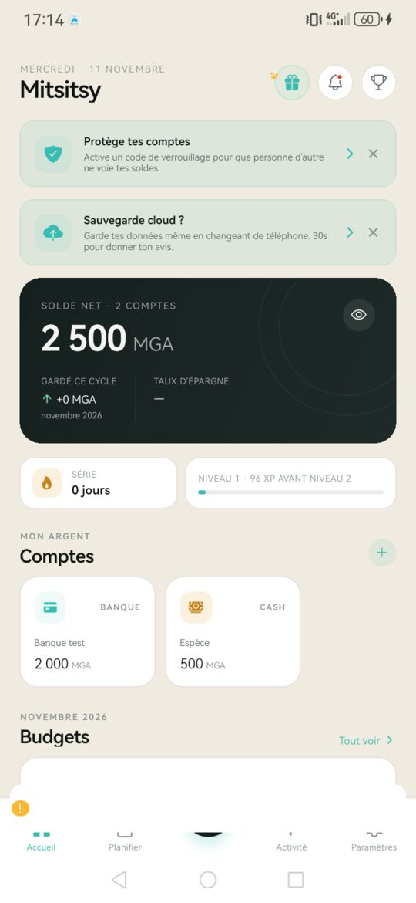
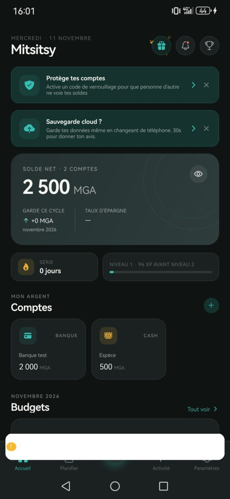
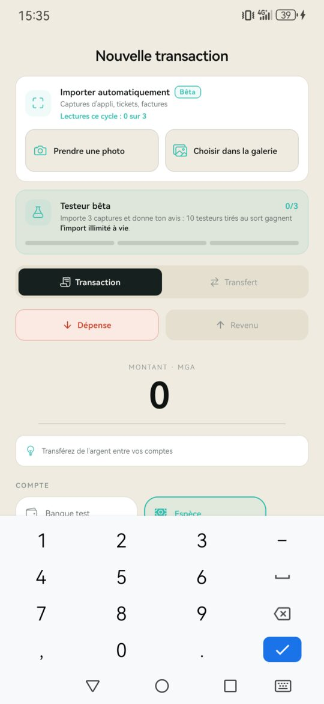
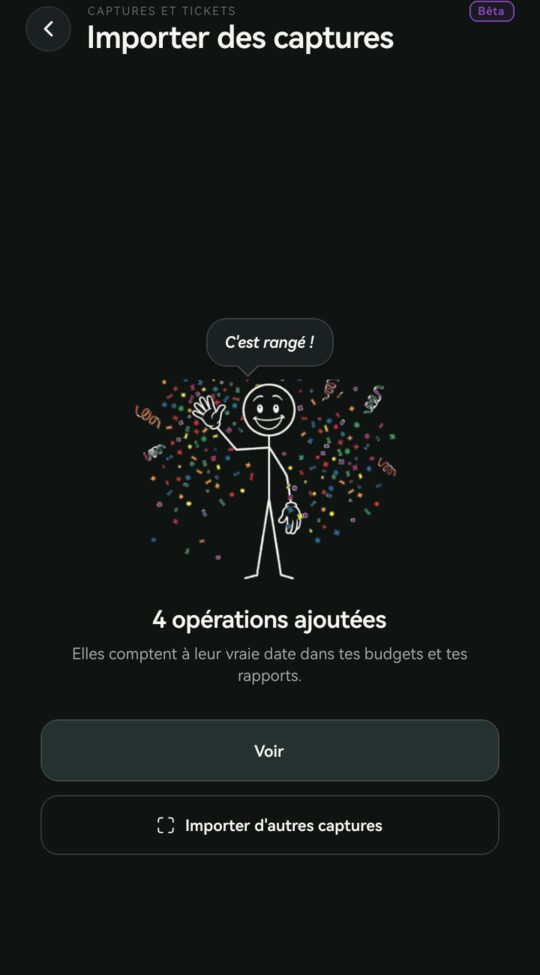

Votre salaire arrive... et s'évapore
Vous retirez de l'argent au distributeur. Une semaine plus tard, votre portefeuille est vide. Où est passé cet argent ? Impossible de savoir.

Mitsitsy Import Fonctionnalités FAQSuivez chaque Ariary dépensé, même sans internet. Conçue pour Madagascar.




Une capture de l'écran Transactions de MCB Juice, ou la photo d'un ticket de retrait, de carte ou de caisse. Mitsitsy lit les opérations sur le téléphone, sans internet, et vous vérifiez tout avant d'enregistrer.
Testeurs bêta. Faites vos 3 imports, donnez votre avis et tentez de gagner l'import illimité à vie : 10 testeurs tirés au sort.
Lire le règlement du tirageVous retirez de l'argent au distributeur. Une semaine plus tard, votre portefeuille est vide. Où est passé cet argent ? Impossible de savoir.
À Madagascar, la connexion est instable et coûteuse. Les apps qui nécessitent internet ? Impossibles à utiliser.
Mitsitsy est la première application de suivi des dépenses conçue pour les économies en cash comme Madagascar. Notre promesse : enregistrer une dépense en moins de 10 secondes, sans jamais avoir besoin d'internet.
En un coup d'œil, comprenez vos dépenses du jour, de la semaine, du mois. Des graphiques simples qui révèlent vos habitudes.
Fini les mystères financiersMontant → Catégorie → Enregistré. C'est tout. Pas de champs inutiles, pas de questions superflues.
Une habitude qui tient dans la duréeAu marché, en brousse, dans le taxi-be : votre app fonctionne. Vos données restent sur votre téléphone, en sécurité.
Plus d'excuse pour ne pas noterGérez plusieurs devises avec conversion automatique. Parfait pour les voyageurs et expatriés.
Une seule app pour toutes vos financesDes outils simples pour reprendre le contrôle de votre argent
| Critère | Apps traditionnelles | Mitsitsy |
|---|---|---|
| Temps d'entrée | 30-60 secondes | < 10 secondes |
| Internet requis | Oui, toujours | Non (100% offline) |
| Prix | Freemium avec pubs | 100% Gratuit, sans pub |
| Vie privée | Données sur serveurs | Stockage local uniquement |
Tout ce que vous devez savoir sur Mitsitsy
Oui ! Mitsitsy est disponible maintenant sur Google Play Store pour Android. Téléchargez-la gratuitement et commencez à suivre vos dépenses en 10 secondes.
…
…
…
…
Téléchargez Mitsitsy maintenant et commencez à voir où va réellement votre argent.
Télécharger gratuitement